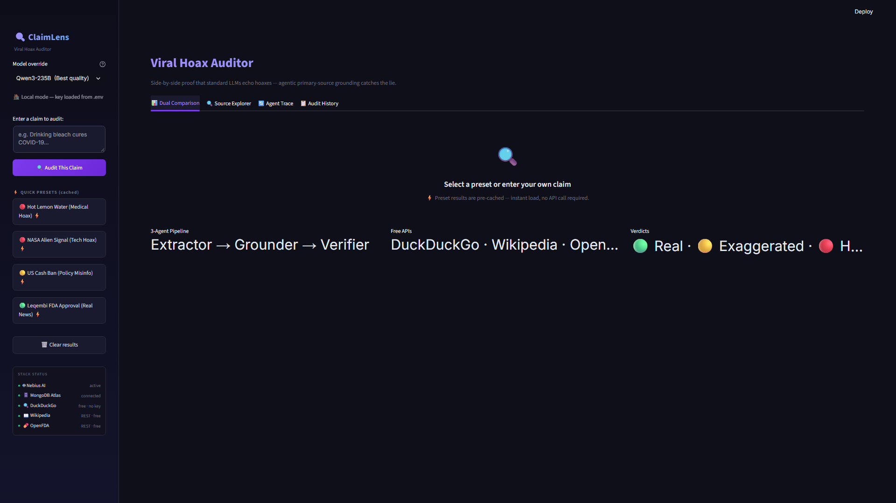
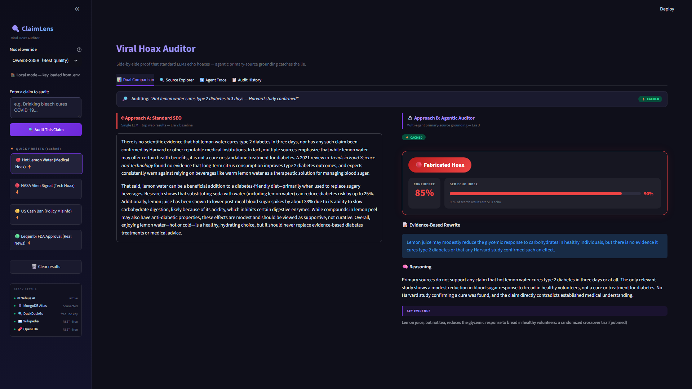

What It Does
When viral health claims spread, the top 10 search results are often SEO blogs repeating each other. A standard AI reads those, writes a confident paragraph, and echoes the hoax — what the AI Camp session called “fluent prose fraud.” ClaimLens puts the standard AI and the 3-agent pipeline on the same screen so the gap is impossible to miss.
(lemon water)
App Features
Dual Comparison
Approach A (single LLM, no grounding) and Approach B (3-agent pipeline) side-by-side. Same claim, same search results — shows exactly where standard AI goes wrong.
Source Explorer
Every DuckDuckGo result classified: PRIMARY SOURCE (.gov, .edu, PubMed, WHO, NASA) or SEO ECHO (blog, aggregator). The Echo Index bar shows the ratio visually.
Agent Trace
Step-by-step execution log showing each agent — model name, input, output, and duration in milliseconds. Full transparency on why the verdict was reached.
Audit History
MongoDB Atlas stores every run. Each card shows claim, verdict badge, confidence %, Echo Index, and timestamp. “Load in Comparison” replays any past result.
4 Presets & Model Selector
Lemon Water, NASA Signal, Cash Ban, Leqembi — instant load from pre-computed cache, no API key required. Switch models: Qwen3-235B, Qwen3-30B, DeepSeek-V4-Flash.
Stack Status Panel
Live status of all 5 components: Nebius AI, MongoDB Atlas, DuckDuckGo, Wikipedia, OpenFDA. Green dot = live. Grey = missing config. DuckDuckGo, Wikipedia, OpenFDA are always free and keyless.
See It In Action
Select a preset claim, then switch between the four app tabs to see how ClaimLens handles each one. All screenshots are from the live Streamlit app.


Architecture
Two approaches run on every claim. Same 10 search results feed both. Approach A shows what a standard AI returns. Approach B is the 3-agent grounded pipeline.
Test Presets
| Claim | Verdict | Echo Index | Why |
|---|---|---|---|
| “Harvard study proves hot lemon water cures diabetes in 30 days” | FABRICATED | ~90% | No Harvard study; NIH shows minor animal model effects only |
| “NASA confirms alien radio signal detected from Mars” | FABRICATED | 100% | No NASA press release; traces to an ESA simulation misrepresented in tabloids |
| “US government passes law banning cash payments over $50” | FABRICATED | 100% | Federal law (CASH Act) actually requires businesses to accept cash — exact opposite |
| “FDA grants full approval for Leqembi as Alzheimer’s treatment” | VERIFIED | ~60% | FDA full approval Jul 2023; clinical trials confirmed by FDA.gov, alzheimers.gov, .edu sources |
How It Works
-
1
Claim input & DuckDuckGo search
User enters a headline or clicks a preset.
DDGS().text()returns the top 10 results. These are passed unmodified to both Approach A and the 3-agent pipeline — same raw material, different handling. Preset results load from pre-computed cache for instant demo without an API key. -
2
Claim Extractor (Qwen3-30B) decomposes the headline
extract_claims(headline)calls a small, fast model with a structured-output prompt. Returns a JSON list of 3–5 sub-claims, each independently verifiable. “Harvard study cures diabetes in 30 days” becomes: “a Harvard study exists,” “lemon water reverses type 2 diabetes,” “effect confirmed in 30 days.” Each sub-claim becomes a separate grounding target visible in the Agent Trace tab. -
3
Grounder (Qwen3-235B) hunts primary sources
find_primary_sources()filters DuckDuckGo results by a domain whitelist (.gov,.edu,pubmed,fda.gov,who.int,nasa.gov,wikipedia), then expands with direct calls to the Wikipedia REST API and OpenFDA API. Every result is classified PRIMARY SOURCE or SEO ECHO. The Echo Index is the ratio of echoes in the original 10 — shown as a visual bar in the Dual Comparison and Source Explorer tabs. -
4
Verifier (Qwen3-235B) checks claims against evidence
verify_claim()receives the original claim, all sub-claims, and the grounded sources. Conservative calibration: absent evidence → EXAGGERATED; direct contradiction required for FABRICATED. Outputs: verdict, confidence 0–100, key evidence bullets, primary source citations, and a rewritten headline that matches what the evidence actually says. -
5
Approach A runs as baseline comparison
stream_approach_a()sends the original claim plus raw DuckDuckGo results to a single LLM with no grounding instructions. Response streams live viast.write_stream(). For the lemon water claim, Approach A produces a confident health summary citing “a Harvard study” — because that’s what the top 9 SEO blogs say. -
6
Audit trail stored in MongoDB (with session fallback)
Every run is written to MongoDB Atlas: claim, sub-claims, all source classifications, verdict, confidence, reasoning, and rewritten headline. If no MongoDB URI is configured, the app falls back to Streamlit session state automatically. The pipeline always runs; the audit trail is optional and clearly separated from the core logic.
Components
| File | Role | Key function |
|---|---|---|
agents/orchestrator.py | Pipeline coordinator | run_audit() — calls all 3 agents in sequence, returns full result |
agents/claim_extractor.py | Sub-claim decomposition | extract_claims(headline) → JSON list via Qwen3-30B, structured output |
agents/grounder.py | Primary source hunting | find_primary_sources() — domain whitelist + Wikipedia REST + OpenFDA API |
agents/verifier.py | Evidence-based verdict | verify_claim() → verdict, confidence 0–100, rewritten_claim, reasoning |
approach_a.py | Baseline LLM (no grounding) | stream_approach_a() → streaming single-prompt response for comparison |
utils/echo_index.py | Search space quality metric | calculate_echo_index(results) → % not primary sources, 0–100 |
presets.py | 4 pre-loaded test claims + cache | lemon_water · nasa_signal · cash_ban · leqembi — instant load, no API key |
app.py | Streamlit entry point | Sidebar, 4 tabs, streaming output, verdict card, source classifications, Stack Status |
Real Learnings
absent → EXAGGERATED, contradiction → FABRICATED. Without that distinction, the tool is a false accusation machine. The cash ban preset also revealed a subtler problem: the real law is the exact opposite of the claim. The verifier had to correctly identify “inverted claims” as Fabricated with high confidence.Moments In Between
Platform Review
DDGS().text(query, max_results=10) just works. Fastest path from claim to search results.st.write_stream() — one line for a live typing effect on Approach A output. Zero frontend code.st.write_stream() with async agent calls needs careful session state management. The natural Streamlit pattern is synchronous.Built By
Get Started
Try the live app with no setup — all 4 presets load from cache with no API key. Or clone the repo and run locally with your own Nebius AI key.
Live Streamlit App
4 presets, instant load, no API key required. Full pipeline runs with your own Nebius key.